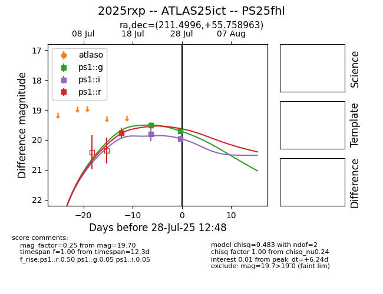

Target 2025rxp at 2025-08-11 05:39, see:
TNS: wis-tns.org/object/2025rxp
YSE: ziggy.ucolick.org/yse/transient_detail/2025rxp
alt names
2025rxp (yse,tns)
ATLAS25ict (atlas)
PS25fhl (panstarrs)
coordinates:
equatorial (ra, dec) = (211.4996,+55.75896)
galactic (l, b) = (102.8760,+58.37062)
photometry
last ps1::g=19.78, ps1::i=19.96, ps1::r=19.77
3 ps1::g, 2 ps1::i, 1 ps1::r detections
